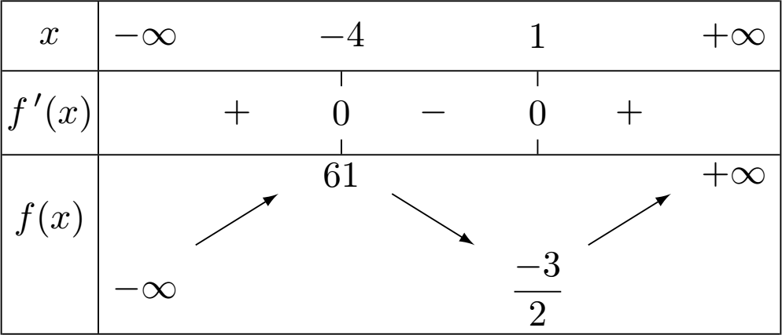
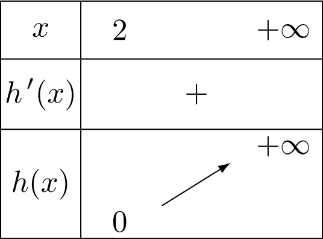

Dérivation (2) : Fonctions dérivées
Dérivées des fonctions usuelles
Exemple
Soit la fonction $f$ définie sur $\R$ par $f(x)=x^2$.
Démontrons que pour tout $x\in\R$ , on : $f’(x)=2x$.
Pour cela, calculons le nombre dérivé de $f$ en un nombre réel quelconque $a$.

Pour $h\neq 0$ :
$$ \begin{aligned} \cfrac{f(a+h)-f(a)}{h} & =\cfrac{(a+h)^2 -a^2 }{h} \\ ~ & =\cfrac{a^2 +2ah+h^2 -a^2 }{h} \\ ~ & =\cfrac{2ah+h^2 }{h} \\ ~ & =\cfrac{h\times\left(2a+h\right)}{h} \\ ~ & =2a+h \end{aligned} $$
Or $\quad\lim\limits_{h\to 0}\left(\cfrac{f(a+h)-f(a)}{h}\right) = \lim\limits_{h\to 0}\left(2a+h\right)=2a$
$~$
Pour tout nombre $a$, on associe le nombre dérivé de la fonction $f$ égal à $2a$.
On a donc défini sur $\R$ une fonction, notée $f’$, tel que $f’(x)=2x$.
Cette fonction s’appelle la fonction dérivée de $f$.
Rem

C’est au mathématicien français Joseph-Louis Lagrange (1736-1813) que l’on doit la notation $f’(x)$ au nom de “dérivée” pour désigner ce concept mathématique.
Definition
Soit $f$ une fonction définie sur $I$.
On dit que $f$ est dérivable sur $I$ si elle est dérivable en tout réel $x\in I$.
Dans ce cas, la fonction qui à tout $x\in I$ associe le nombre dérivé de $f$ en $x$ est appelée fonction dérivée de $f$ et se note $f’$.
Formules de dérivation des fonctions usuelles❤️
Prop
$$ \begin{array}{|lcclc|}\hline \rule[-2mm]{0cm}{8mm} f & \Df & \quad\quad & f’ & \Dfp \\ \hline \rule[-2mm]{0cm}{8mm} f(x)=a & \R & \quad\rarr\quad & f’(x)=0 & \R \\ \rule[-2mm]{0cm}{8mm} \text{avec}\quad a\in\R & & & & \\ \hline \rule[-2mm]{0cm}{8mm} f(x)=ax & \R & \quad\rarr\quad & f’(x)=a & \R \\ \rule[-2mm]{0cm}{8mm} \text{avec}\quad a\in\R & & & & \\ \hline \rule[-2mm]{0cm}{8mm} f(x)=x^2 & \R & \quad\rarr\quad & f’(x)=2x & \R \\ \hline \rule[-2mm]{0cm}{8mm} f(x)=x^n & \R & \quad\rarr\quad & f’(x)=nx^{(n-1)} & \R \\ \rule[-2mm]{0cm}{8mm} \text{avec}\quad n\ge 1 & & & & \\ \hline \rule[-2mm]{0cm}{8mm} f(x)=\cfrac{1}{x} & \Ret & \quad\rarr\quad & f’(x)=\cfrac{-1}{x^2} & \Ret \\ \hline \rule[-2mm]{0cm}{8mm} f(x)=\cfrac{1}{x^n} & \Ret & \quad\rarr\quad & f’(x)=\cfrac{-n}{x^{(n+1)}} & \Ret \\ \rule[-2mm]{0cm}{8mm} \text{avec}\quad n\ge 1 & & & & \\ \hline \rule[-2mm]{0cm}{8mm} f(x)=\sqrt{x} & \Rp & \quad\rarr\quad & f’(x)=\cfrac{1}{2\sqrt{x}} & \Rpe \\ \hline \end{array} $$
Exemple
-
Soit $f$ définie sur $\R$ par $\quad \boxed{f(x)=x^4}\quad$ alors :
- $f$ est dérivable sur $\R$
- On a, pour tout $x\in\R$, $\quad \boxed{f’(x)=4x^3}$
-
Soit $f$ définie sur $\Ret$ par $\quad \boxed{f(x)=\cfrac{1}{x^5}}\quad$ alors :
- $f$ est dérivable sur $\Ret$
- On a, pour tout $x\in\Ret$, $\quad \boxed{f’(x)=\cfrac{-5}{x^6}}$
Demo
Dérivée de la fonction inverse
Soit la fonction $f$ définie sur $\Ret$ par $f(x)=\cfrac{1}{x}$.
Démontrons que pour tout $x$ de $\Ret$, on a : $f’(x)=\cfrac{-1}{x^2}$.
- Pour $h\neq 0$ et $h\neq-a$ :
$$ \begin{array}{rcl} \cfrac{f(a+h)-f(a)}{h} & = & \cfrac{\cfrac{1}{a+h}-\cfrac{1}{a}}{h} \\ & = & \cfrac{\cfrac{1\tc{red}{\times a}}{\pa{a+h}\tc{red}{\times a}}-\cfrac{1\tc{red}{\times \pa{a+h}}}{a\tc{red}{\times \pa{a+h}}}}{h} \\ & = & \cfrac{\quad\cfrac{a-(a+h)}{a(a+h)}\quad}{h} \\ & = & \cfrac{\quad\cfrac{-h}{a(a+h)}\quad}{h}\qquad = \cfrac{-1}{a(a+h)} \end{array} $$
- Donc
$$\lim\limits_{h\to 0}\left(\cfrac{f(a+h)-f(a)}{h}\right)=\lim\limits_{h\to 0}\left(\cfrac{-1}{a(a+h)}\right)=\cfrac{-1}{a^2}$$
Pour tout nombre $a$, on associe le nombre dérivé de $f$ égal à $\cfrac{-1}{a^2}$.
Ainsi, pour tout $x\in\Ret$, on a : $\boxed{f’(x)=\cfrac{-1}{x^2}}$.
Demo
Non dérivabilité de la fonction racine carrée en $0$
Soit la fonction $f$ définie sur $\left[0~;~+\infty\right[$ par $f(x)=\sqrt{x}$
On calcule le taux de variation de $f$ en $0$ :
- Pour $h>0$ :
$$ \begin{array}{rcl} \cfrac{f(0+h)-f(0)}{h} & = & \cfrac{\sqrt{0+h}-\sqrt{0}}{h} \\ & = & \cfrac{\sqrt{h}}{h}\qquad=\cfrac{\sqrt{h}}{\sqrt{h}\times\sqrt{h}}\qquad=\cfrac{1}{\sqrt{h}} \end{array} $$
- Donc :
$$\lim\limits_{h\to 0}\left(\cfrac{f(0+h)-f(0)}{h}\right)=\lim\limits_{h\to 0}\left(\cfrac{1}{\sqrt{h}}\right)=+\infty$$
En effet, lorsque $h\to 0$, $\left(\cfrac{1}{\sqrt{h}}\right)$ prend des valeurs de plus en plus grandes.
Donc $f$ n’est pas dérivable en $0$.
Géométriquement, cela signifie que la courbe représentative de la fonction racine carrée admet une tangente verticale en $x=0$.

Opérations sur les fonctions dérivées
Somme, produit, inverse, quotient de dérivées
Exemple
Soit la fonction $f$ définie sur $\R$ par $f(x)=x+x^2$.
Pour $h\neq 0$ :
$$ \begin{array}{rcl} \cfrac{\tc{blue}{f(a+h)}-\tc{red}{f(a)}}{h} & = & \cfrac{\left(\tc{blue}{(a+h)+(a+h)^2 }\right)-\tc{red}{(a+a^2 )}}{h} \\ ~ & = & \cfrac{a+h+a^2 +2ah+h^2 -a-a^2 }{h} \\ ~ & = & \cfrac{h+2ah+h^2 }{h}=\cfrac{h(1+2a+h)}{h}\quad=1+2a+h \end{array} $$
Donc : $\lim\limits_{h\to 0}\left(\cfrac{f(a+h)-f(a)}{h}\right)= \lim\limits_{h\to 0}\left(1+2a+h\right)=1+2a$.
$~$
On a $f$ dérivable sur $\R$ et pour tout $x\in\R$ et $f’(x)=1+2x$.
On pose pour tout $x\in\R$ : $\quad u(x)=x~$ et $~v(x)=x^2$. On a ainsi : $f(x)=u(x)+v(x)$
Pour tout $x\in\R$, on a donc : $\quad u’(x)=1~$ et $~v’(x)=2x$
On constate sur cet exemple que : $~f’(x)=u’(x)+v’(x)$
Soit encore $\boxed{~(u+v)’(x)=u’(x)+v’(x)~}$
Formules d’opération sur les fonctions dérivées❤️
Prop
$u$ et $v$ sont deux fonctions dérivables sur $I$.
| Dérivabilité | Propriété |
|---|---|
| $(u+v)$ est dérivable sur $I$ | $(u+v)’=u’+v’$ |
| $(ku)$ est dérivable sur $I$ avec $k\in\R$ | $(ku)’=ku’$ |
| $(uv)$ est dérivable sur $I$ | $(uv)’=u’v+uv’$ |
| $(u^n)$ est dérivable sur $I$ | $(u^n )’=nu’u^{n-1}$ |
| $\left(\cfrac{1}{u}\right)$ est dérivable sur $I$ | $\left(\cfrac{1}{u}\right)’=\cfrac{-u’}{u^2}$ |
| Avec $u$ qui ne s’annule pas sur $I$ | |
| $\left(\cfrac{u}{v}\right)$ est dérivable sur $I$ | $\left(\cfrac{u}{v}\right)’=\cfrac{u’v-uv’}{v^2}$ |
| Avec $v$ qui ne s’annule pas sur $I$ |
Demo
$(uv)’=u’v+uv’$
- On veut démontrer que :
$$\lim\limits_{h\to 0}\left(\cfrac{(uv)(a+h)-(uv)(a)}{h}\right) = u’(a)v(a)+u(a)v’(a)$$
- Calculons $\pa{\cfrac{(uv)(a+h)-(uv)(a)}{h}}$
$$ \begin{array}{rl} \cfrac{(uv)(a+h)-(uv)(a)}{h} & =\cfrac{u(a+h)v(a+h)-u(a)v(a)}{h} \\ & =\cfrac{u(a+h)v(a+h)\quad\color{blue}-u(a)v(a+h)+u(a)v(a+h)\color{black}\quad-u(a)v(a)}{h} \\ & =\cfrac{u(a+h)\color{violet}v(a+h)\color{black}-u(a)\color{violet}v(a+h)\color{black}+\color{red}u(a)\color{black}v(a+h)-\color{red}u(a)\color{black}v(a)}{h} \\ & =\cfrac{\Big(u(a+h)-u(a)\Big)\color{violet}v(a+h)\color{black}+\color{red}u(a)\color{black}\Big(v(a+h)-v(a)\Big)}{h} \\ & =\cfrac{\Big(u(a+h)-u(a)\Big)v(a+h)}{h}+\cfrac{u(a)\Big(v(a+h)-v(a)\Big)}{h} \\ & =\cfrac{u(a+h)-u(a)}{h}\times v(a+h)\quad+\quad u(a)\times \cfrac{v(a+h)-v(a)}{h} \end{array} $$
On a :
- $\lim\limits_{h\to 0}\left(u(a+h)\right)=u(a)$
- $\lim\limits_{h\to 0}\left(v(a+h)\right)=v(a)$
De plus, on a $u$ et $v$ dérivables sur $I$ donc :
- $\lim\limits_{h\to 0}\left(\cfrac{u(a+h)-u(a)}{h}\right)=u’(a)$
- $\lim\limits_{h\to 0}\left(\cfrac{v(a+h)-v(a)}{h}\right)=v’(a)$
En passant à la limite lorsque $h\to 0$, on a :
$$ \begin{array}{rclcl} (uv)’ & = & \lim\limits_{h\to 0}\left(\cfrac{(uv)(a+h)-(uv)(a)}{h}\right) & ~ & ~ \\ ~ & = & \lim\limits_{h\to 0}\Big(\cfrac{u(a+h)-u(a)}{h}\times v(a+h) & + & u(a)\times \cfrac{v(a+h)-v(a)}{h}\Big) \\ ~ & = & \lim\limits_{h\to 0}\left(\cfrac{u(a+h)-u(a)}{h}\times v(a+h)\right) & + & \lim\limits_{h\to 0}\left(\cfrac{v(a+h)-v(a)}{h}\times u(a)\right) \\ ~ & = & u’(a)v(a) & + & u(a)v’(a) \end{array} $$
On conclut que $\boxed{~(uv)’=u’v+uv’~}$
Methode
Calculer les dérivées de sommes, produits et quotients de fonctions.
Calculons les fonctions dérivées des fonctions suivantes :
- $\boxed{f_1(x)=5x^3}$
On a : $\quad f_1(x)=5\times u(x)\quad$ avec $\quad u(x)=x^3\quad\Rarr u’(x)=3x^2$
Donc :
$$\quad f_1’(x)=5\times u’(x)\quad=5\times 3x^2 =15x^2 \quad\rarr\boxed{f_1’(x)=15x^2 }$$
- $\boxed{f_2(x)=3x^2+4\sqrt{x}}$
On a : $\quad f_2(x)=3\times u(x)+4\times v(x)\quad$ avec $\begin{cases}u(x)=x^2\\v(x)=\sqrt{x}\end{cases}\Rarr\begin{cases}u’(x)=2x\\v’(x)=\cfrac{1}{2\sqrt{x}}\end{cases}$
Donc :
$$f_2’(x)=\left(3\times u’(x)\right)+\left(4\times v’(x)\right)=\left(3\times 2x\right)+\left(4\times \cfrac{1}{2\sqrt{x}}\right)\quad\rarr\boxed{f_2’(x)=6x+\cfrac{2}{\sqrt{x}}}$$
- $\boxed{f_3(x)=\cfrac{1}{2x^2+5x}}$
On a : $\quad f_3(x)=\cfrac{1}{u}\quad$ avec $u(x)=2x^2+5x\quad\Rarr\begin{array}{rcl} u’(x)&=&\left(2\times 2x\right)+\left(5\times 1\right)\\~&=&4x+5\end{array}$
Donc :
$$f_3’(x)=\cfrac{u’}{u^2 }=\cfrac{4x+5}{(2x^2 +5x)^2 }\quad\rarr\boxed{f_3’(x)=\cfrac{4x+5}{(2x^2 +5x)^2 }}$$
- $\boxed{f_4(x)=(3x^2+4x)(5x-1)}$
On a : $\quad f_4(x)=u(x)\times v(x)\quad$ avec $\begin{cases}u(x)=3x^2+4x\\v(x)=5x-1\end{cases}\Rarr\begin{cases}u’(x)=6x+4\\v’(x)=5\end{cases}$
Donc :
$$ \begin{array}{rcl} f_4’(x) & = & u’v+uv’ \\ & = & (6x+4)(5x-1)+(3x^2 +4x)(5) \\ & = & 30x^2 -6x+20x-4+15x^2 +20x \\ & = & 45x^2 +34x-4 \end{array} \qquad\rarr\boxed{f_4’(x)=45x^2 +34x-4} $$
- $\boxed{f_5(x)=\cfrac{6x-5}{x^3 -2x^2 -1}}$
On a : $\quad f_5(x)=\cfrac{u(x)}{v(x)}\quad$ avec $\begin{cases}u(x)=6x-5\\v(x)=x^3 -2x^2 -1\end{cases}\Rarr\begin{cases}u’(x)=6\\v’(x)=3x^2 -4x\end{cases}$
Donc :
$$ \begin{array}{rcl} f_5’(x) & = & \cfrac{u’v-uv’}{v^2 } \\ & = & \cfrac{(6)(x^3 -2x^2 -1)-(6x-5)(3x^2 -4x)}{(x^3 -2x^2 -1)^2 } \\ & = & \cfrac{6x^3 -12x^2 -6-18x^3 +24x^2 +15x^2 -20x}{(x^3 -2x^2 -1)^2 } \\ & = & \cfrac{-12x^3 +27x^2 -20x-6}{(x^3 -2x^2 -1)^2 } \end{array} $$
Donc $\quad\boxed{f_5’(x)=\cfrac{-12x^3 +27x^2 -20x-6}{(x^3 -2x^2 -1)^2 }}$
Composée de dérivées
Prop
| $f$ | $\mathcal{D}_f$ | $f’$ |
|---|---|---|
| $f(ax+b)$ | $f$ dérivable sur $I$ | $af’(ax+b)$ |
Exemple
$f(x)=\sqrt{5x-4}=u(5x-4)\quad$ avec $~u(x)=\sqrt{x}~\Rarr u’(x)=\cfrac{1}{2\sqrt{x}}$
Donc $f’(x)=5\times u’(5x-4)=5\times\cfrac{1}{2\sqrt{5x-4}}$
Cas de la fonction valeur absolue
Exemple
- La valeur absolue de $8$ est égale à $8$.
- La valeur absolue de $-5$ est égale à $5$.
Definition
La valeur absolue d’un nombre $A$ est égal au nombre $A$ si $A$ est positif, et au nombre $-A$ si $A$ est négatif.
La valeur absolue de $A$ se note $\abs{A}$.
$$\abs{A}=\begin{cases}A&\text{si }A\ge0\\-A&\text{si }A\le 0\end{cases}$$
Exemple
$$\abs{x-5}\quad=\begin{cases}x-5&\text{si }(x-5)\ge 0\\-(x-5)&\text{si }(x-5)\le 0\end{cases}\quad=\begin{cases}x-5&\text{si }x\ge5\\5-x&\text{si }x\le 5\end{cases}$$
Definition
La fonction valeur absolue est la fonction $f$ définie sur $\R$ par $f(x)=\abs{x}$.

Propriete
La fonction valeur absolue est :
- strictement décroissante sur $\left]-\infty~;~0\right]$
- strictement croissante sur $\left[0~;~+\infty\right[$.

Rem
Dans un repère orthogonal, la courbe représentative de la fonction valeur absolue est symétrique par rapport à l’axe des ordonnées.
Demo
Étude de la dérivabilité en 0
Soit $f$ définie sur $\R$ par $f(x)=\abs{x}$.
Calculons le taux de variation de $f$ en 0 :
$$\cfrac{f(0+h)-f(0)}{h}=\cfrac{\abs{0+h}-\abs{0}}{h}=\cfrac{\abs{h}}{h}$$
- Si $h>0\Rarr\abs{h}=h\quad$ donc $\quad\cfrac{f(0+h)-f(0)}{h}=\cfrac{h}{h}=1$
- Si $h\lt 0\Rarr\abs{h}=-h\quad$ donc $\quad\cfrac{f(0+h)-f(0)}{h}=\cfrac{-h}{h}=-1$

Où placer la tangente en $x=0$ ?
Donc :
$$ \lim\limits_{h\to 0}\left(\cfrac{f(0+h)-f(0)}{h}\right)=\begin{cases} 1\quad\text{si }h>0\\-1\quad\text{si }h\lt 0 \end{cases} $$
Cette limite n’existe pas car elle dépend du signe de $h$.
La fonction valeur absolue n’est donc pas dérivable en 0.
Rem
Cependant, il est à noter que la fonction $f(x)=\abs{x}$ est dérivable en tout nombre différent de $0$.
Étude de fonctions
Variations d’une fonction
Theoreme
Soit une fonction $f$ définie et dérivable sur $I$.
- Si $f’(x)\le 0$, alors $f$ est décroissante sur $I$.
- Si $f’(x)\ge 0$, alors $f$ est croissante sur $I$.
Exemple
Soit la fonction $f$ définie sur $\R$ par $f(x)=2x^2-8x+1$.

Calcul de $f’(x)$ :
$f$ est dérivable sur $\R$ et $\quad f’(x)=4x-8$
Signe de $f’$ en fonction de $x$.
Il faut résoudre $f’(x)>0$
$$f’(x)>0~\iff~4x-8>0~\iff~4x>8~\iff~x>2$$
Si $~x>2~$ alors $~f’(x)>0~$ donc $~f~$ est croissante sur $\left[2~;~+\infty\right[$

$f(2)=2\times (2)^2-8\times(2)+1=-7$
La fonction $f$ admet un minimum égal à $(-7)$ en $x=2$
Exemple
Soit la fonction $f$ définie sur $\R$ par $f(x)=x^3 +\cfrac{9}{2}x^2 -12x+5$.
Calcul de $f’(x)$
$f$ est dérivable sur $\R$ et $\quad f’(x)=3x^2 +9x-12$
Signe de $f’$ en fonction de $x$
Il faut résoudre $f’(x)>0$
$f’$ étant une fonction du 2$^{\text{nd}}$ degré, il faut trouver les racines de $~3x^2 +9x-12$.
On a :
$$\Delta=b^2 -4ac=9^2 -4\times 3\times (-12)=225\quad>0$$
Il existe donc 2 racines : $\begin{cases} x_1=\cfrac{-b+\sqrt{\Delta}}{2a}=\cfrac{-9+\sqrt{225}}{2\times 3}=1\\~\\ x_2=\cfrac{-b-\sqrt{\Delta}}{2a}=\cfrac{-9-\sqrt{225}}{2\times 3}=-4 \end{cases}$
On a :
$$~a=3>0~\text{donc}~f’(x)=(3x^2+9x-12)\lt 0~\text{pour}~x\in\left[-4~;~1\right]$$
- Tableau de variations de $f$

On a :
$f(-4)=(-4)^3 +\cfrac{9}{2}\times(-4)^2 -12\times(-4)+5=61$
$f(1)=(1)^3 +\cfrac{9}{2}\times(1)^2 -12\times(1)+5=\cfrac{-3}{2}$

Extremum d’une fonction
Theoreme
Soit $f$ définie et dérivable sur $I$ et $f’$ sa dérivée.
Si $~f’~$ s’annule et change de signe en $~x=c~$ de $~I~$ alors $~f~$ admet un extremum local en $x=c$.
Rem
Extremum $=$ minimum ou maximum
Exemple
Soit $f$ définie sur $\R$ par $f(x)=5x^2-3x+4$
Pour tout $x\in\R$, on a : $~f’(x)=10x-3$
Et $f’(x)=0~$ pour $~x=\cfrac{3}{10}$
$~$
On a $~f\left(\cfrac{3}{10}\right)=\cfrac{71}{20}$
$f$ admet donc un minimum en $x=\cfrac{3}{10}$ égal à $\left(\cfrac{71}{20}\right)$.
Position relative de deux courbes
Exemple
Soit $f$ et $g$ deux fonctions définies sur $\left[2~;~+\infty\right[$ par :
- $f(x)=x^3 $
- $g(x)=-5x+18$
L’étude de la position relative de $\Cf$ et de $\Cg$ revient à étudier le signe de la différence $f(x)-g(x)$
On pose : $h(x)=f(x)-g(x)=x^3 +5x-18$
Pour tout $x$ de $\left[2~;~+\infty\right[$, on a : $$h’(x)=3x^2 +5$$
$h’$ est une fonction du 2$^{nd}$ degré :
- $a=3$ , $b=0$ et $c=5$
- $\Delta=b^2 -4ac=0^2 -4\times 3\times 5=-60\lt 0$
Donc $h’(x)$ est du signe de $a=3>0$
Donc $h’(x)>0 \Rarr h$ est strictement croissante sur $\left[2~;~+\infty\right[$

De plus, on a : $h(2)=(2)^3+5\times (2)-18=0$
$~$
D’après le tableau de variations, on a $h(x)\ge 0$.
Donc, pour tout $x\in\left[2~;+\infty\right[$, on a :
$$h(x)\ge 0~\iff~f(x)-g(x)\ge 0~\iff~f(x)\ge g(x)$$
On en déduit que $\Cf$ est au-dessus de $\Cg$ sur $x\in\left[2~;+\infty\right[$.